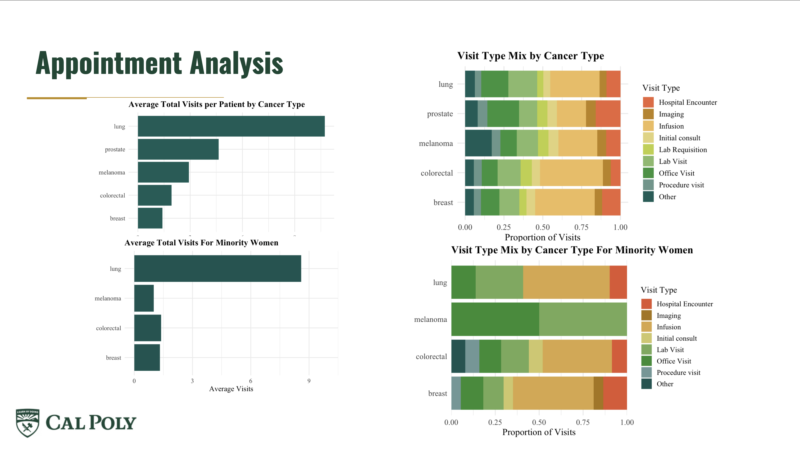
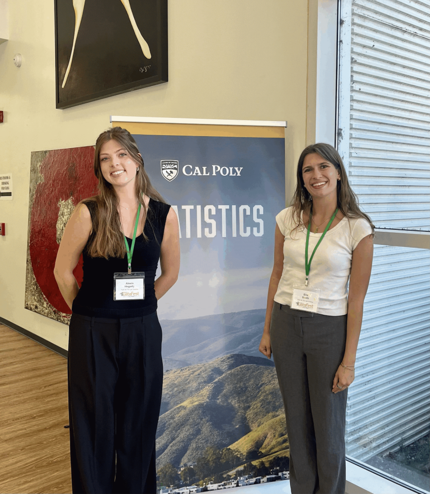

DataFest presentation
The project's presentation on patient stress, anxiety, appointments, and the monthly cancer care journey.
Open presentation ↗DataFest 2026 · Team project
A healthcare data-storytelling project centered on the questions, uncertainty, and information needs that shape a patient's treatment experience.

Project overview
For DataFest 2026, my team explored cancer care journeys through a patient-centered lens. We examined stress and anxiety, appointment experiences, and the information patients need at different points during treatment.
The project brought together care-journey patterns and social-determinant questions to focus attention on communication, access to information, and the human experience behind healthcare data. Our presentation translates those insights into a clear visual narrative about the moments where better support can matter most.
Project material

The project's presentation on patient stress, anxiety, appointments, and the monthly cancer care journey.
Open presentation ↗